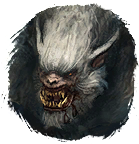
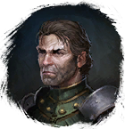

Приманка для Вендиго
Предметы / Ключи
Открыть в интерактивной вики →
| Вес | 1 |
|---|---|
| Цена | 0 |
Описание
Мясо существ, обитающих на плато, которое позволяет заманить Вендиго в его логово.
Требуется для входа в инстанс
Требуется для входа в инстанс

Вендиго. Получить можно во время события на плато Дмортера убивая мобов и специальных мобов элиты. Можно получить успешно выполнив ежедневное задание "Зерно Хаоса" [ур. 70] у
Варник (но награда меняется).| Мясо существ с Плато, которое позволяет выманить Вендиго в его логово. |
Дроп
Применение
|
Способы получения
|